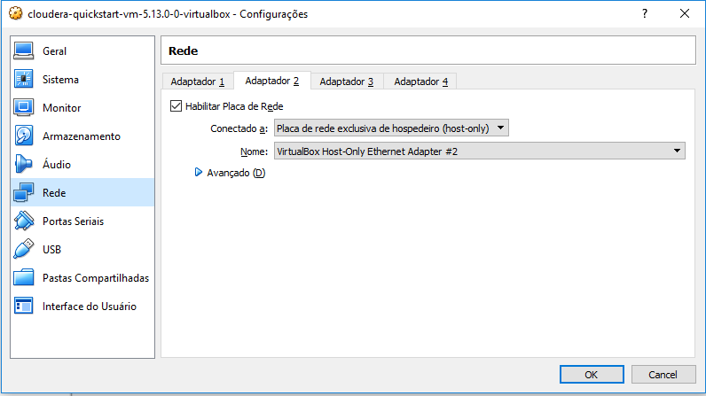
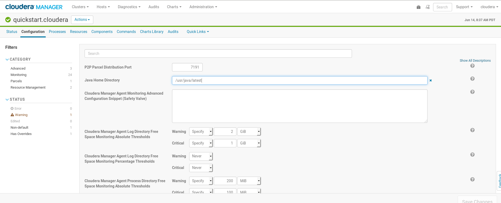
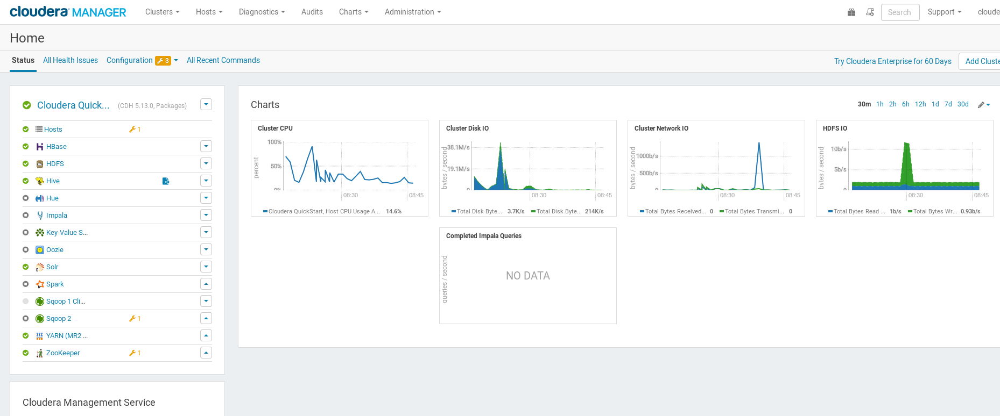
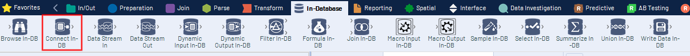
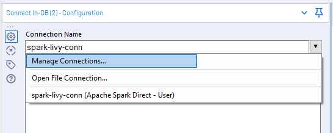
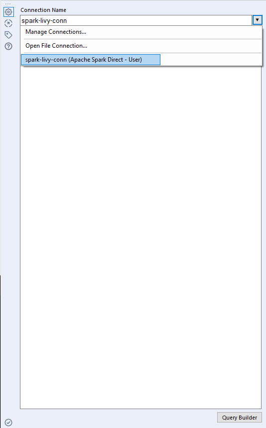
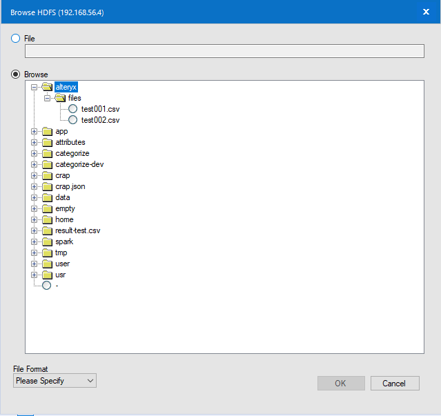
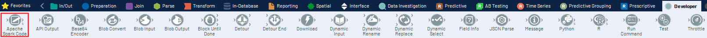
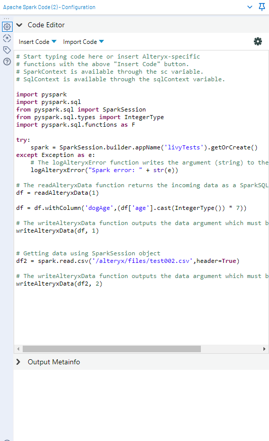
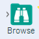

Roteiro de integração Spark / Alteryx
Versão 2.0.1
Autor
André Carneiro andre.carneiro@keyrus.com.br
Introdução
Esse material é um roteiro para desenvolvedores que queiram entender como ligar o Alteryx ao Spark utilizando Apache Livy em uma máquina virtual(VM) Cloudera CDH 5.13x utilizando rpm packages e instalações manuais.
Pré-requisitos
- Processador i5 com 16GB de RAM
- Virtualbox 5
- VM oficial da Cloudera CDH 5
- Alteryx Design
Antes de inicializar a VM
A VM da Cloudera vem com os recursos ao mínimo. Isso acaba atrapalhando o próprio Cloudera Manager que muitas vezes não consegue inicializar alguns serviços por falta de recurso(memória, normalmente), o que atrapalha bastante.
Para evitar isso, antes de inicializar a VM, aumente os recursos de memória, vídeo, processamento ao máximo possível.
Também adicione uma interface de rede para que a VM esteja acessível do Windows(isso deve ser feito antes de inicializar a VM).
No Virtualbox, uma vez que a appliance esteja importada, selecione-a e vá em Máquina >> Configurações

Então percorra as opções(Geral, Sistema, etc) e aumente tudo ao máximo possível.
Um item em particular exige um outro tipo de atenção, a Rede. É preciso adicionar uma interface(caso já não tenha sido adicionada), para que a VM fique visível para que o Alteryx consiga acessar o Spark. Para isso, com a VM desligada, vá em Configurações > Rede, então configure dessa forma na aba "Adaptador 2"

Então, ligue a máquina virtual e abra um terminal. Depois digite o comando:
xxxxxxxxxx$ ifconfigenp0s3 Link encap:Ethernet HWaddr 08:00:27:2b:04:c7inet addr:10.0.2.15 Bcast:10.0.2.255 Mask:255.255.255.0UP BROADCAST RUNNING MULTICAST MTU:1500 Metric:1RX packets:665365 errors:0 dropped:0 overruns:0 frame:0TX packets:74038 errors:0 dropped:0 overruns:0 carrier:0collisions:0 txqueuelen:1000RX bytes:788467160 (788.4 MB) TX bytes:8166190 (8.1 MB)enp0s8 Link encap:Ethernet HWaddr 08:00:27:83:3e:25inet addr:192.168.56.4 Bcast:192.168.56.255 Mask:255.255.255.0inet6 addr: fe80::5a6a:495e:570b:dca9/64 Scope:LinkUP BROADCAST RUNNING MULTICAST MTU:1500 Metric:1RX packets:18631 errors:0 dropped:0 overruns:0 frame:0TX packets:20602 errors:0 dropped:0 overruns:0 carrier:0collisions:0 txqueuelen:1000RX bytes:2711228 (2.7 MB) TX bytes:3901519 (3.9 MB)lo Link encap:Local Loopbackinet addr:127.0.0.1 Mask:255.0.0.0UP LOOPBACK RUNNING MTU:65536 Metric:1RX packets:1082237 errors:0 dropped:0 overruns:0 frame:0TX packets:1082237 errors:0 dropped:0 overruns:0 carrier:0collisions:0 txqueuelen:1RX bytes:564530242 (564.5 MB) TX bytes:564530242 (564.5 MB)
A primeira interface é o NAT(Adaptador 1), o IP dela não nos interessa. A segunda interface é a interface recém-configurada(Adaptador 2). Esse é o IP que será usado na conexão com o Alteryx posteriormente. Guarde-o!
Mudando a versão do Java
Creio que o melhor ponto para começar é alterar a versão do JDK. Tem vários bons motivos para fazer isso. Para a ligação entre o Spark e o Alteryx, o motivo é que o Spark 2.3 simplesmente não funciona com o JDK 1.7. Logo é necessário mudar para a versão 1.8.
Para fazer isso, siga os passos abaixo:
Faça o download da versão rpm do JDK 1.8 no site da Oracle(é preciso ter uma conta Oracle. Se não tiver, crie uma!)
Instale o pacote rpm com o comando
$ sudo rpm -ivh <CAMINHO_E_NOME_DO_PACOTE_DO_JDK_1.8>.rpm
Vá para o diretório de instalação
/usr/javae remova o link latest executando:$ sudo rm latest
Recrie o link latest apontando para o diretório da versão 1.8 do JDK
$ sudo ln -s jdk1.8.0_211-amd64 latest
modifique a variável de ambiente
JAVA_HOMEem/etc/profile$ sudo vim /etc/profileProcure a variável
JAVA_HOMEsubstitua o valor para
/usr/java/latestSalve o arquivo e saia do vim digitando
:wqe depois pressionandoENTER
execute o comando
source /etc/profile
Verifique a variável
JAVA_HOMExxxxxxxxxx$ env |grep JAVA_HOMEJAVA_HOME=/usr/java/latest
Verifique a versão que está ativa no sistema executando o comando abaixo
xxxxxxxxxx$ java -versionjava version "1.8.0_211"Java(TM) SE Runtime Environment (build 1.8.0_211-b12)Java HotSpot(TM) 64-Bit Server VM (build 25.211-b12, mixed mode)
Cloudera Manager
Ainda não terminamos com o Java!
Ajustando parâmetros do Java
Infelizmente só alterar a versão do Java e configurar as variáveis de ambiente não é o suficiente para o Cloudera Manager, porque ele mantém um mapeamento próprio de vários parâmetros que utiliza. Felizmente, todos eles são facilmente encontrados na interface do Cloudera Manager.
Para modificar a versão do JDK que o Cloudera Manager está "enxergando", acesse a página do host "quickstart.cloudera". Para isso, acesse Hosts >> All Hosts, depois clique no link "quickstart.cloudera", e na aba "Configuration". A página deve ser essa:

Agora é só alterar o item "Java home Directory" e salvar.
ATENÇÃO: O Cloudera Manager também vai alertar sobre vários parâmetros de alguns serviços como HDFS, Hive, Zookeeper etc, que precisam ser alterados para os valores recomendados(a maioria deles tem a ver com a JVM, logo... Java). É preciso modificar quando possível e suprimir os parâmetros que dependem de infraestrutura extra(load balancers por exemplo). Todos os alertas estão identificados na página principal do Cloudera Manager pelo ícone . Para alterar, basta clicar no ícone, acessar as páginas dos parâmetros, e depois seguir as instruções para adequar os valores. Não esqueça de salvar!
Uma vez que os parâmetros estejam adequados, vá para o terminal e reinicie o Cloudera Manager
xxxxxxxxxx$ cd ~ && sudo ./cloudera-manager --express --force[QuickStart] Shutting down CDH services via init scripts...kafka-server: unrecognized service[QuickStart] Disabling CDH services on boot...error reading information on service kafka-server: No such file or directory[QuickStart] Starting Cloudera Manager server...[QuickStart] Waiting for Cloudera Manager API...[QuickStart] Starting Cloudera Manager agent...[QuickStart] Configuring deployment...Submitted jobs: 76[QuickStart] Deploying client configuration...Submitted jobs: 77[QuickStart] Starting Cloudera Management Service...Submitted jobs: 85[QuickStart] Enabling Cloudera Manager daemons on boot...________________________________________________________________________________Success! You can now log into Cloudera Manager from the QuickStart VM's browser:http://quickstart.cloudera:7180Username: clouderaPassword: cloudera
Agora acesse a página do Cloudera Manager

Os serviços essenciais que devem estar ok são:
- Zookeeper
- HDFS
- Yarn
- Hive
Instalando o Anaconda
Download(versão 3-2019.03 para arquitetura Linux-x86_64)
xxxxxxxxxx$ wget https://repo.anaconda.com/archive/Anaconda3-2019.03-Linux-x86_64.sh
Adicione permissão de execução no script de instalação e execute
xxxxxxxxxx$ chmod +x Anaconda3-2019.03-Linux-x86_64.sh && ./Anaconda3-2019.03-Linux-x86_64.sh
Ative o ambiente do Anaconda executando
source ~/.bashrcou abrindo outro terminal .
Verifique a versão do Python(Deve ser no mínimo 3.6.x)
xxxxxxxxxx$ python --versionPython 3.7.3
Instalando o Spark 2.3
Download do Spark 2.3 para o hadoop 2.6 no site da Apache
xxxxxxxxxx$ cd ~/Download && wget https://archive.apache.org/dist/spark/spark-2.3.3/spark-2.3.3-bin-hadoop2.6.tgz
Descompacte e copie para /usr/lib/
$ unzip spark-2.3.3-bin-hadoop2.6.tgz && sudo cp -R spark-2.3.3-bin-hadoop2.6 /usr/lib
No diretório
/usr/lib/crie o link spark apontando para o diretório do spark 2.3
Exporte a variável
SPARK_HOMEe salve em~/.bashrc
$ echo "export SPARK_HOME=/usr/lib/spark" >>~/.bashrc
Faça o mesmo com a variável
SPARK_MAJOR_VERSION
$ echo "export SPARK_MAJOR_VERSION=2" >>~/.bashrc
Acesse
/usr/lib/spark/sbine execute o scriptspark-config.sh
xxxxxxxxxx$ source spark-config.sh && env |grep SPARKSPARK_HOME=/usr/lib/sparkSPARK_CONF_DIR=/usr/lib/spark/confSPARK_MAJOR_VERSION=2PYSPARK_PYTHONPATH_SET=1Salve as variáveis no arquivo
~/.bashrc
Execute o comando
source ~/.bashrc
Preparando o Hadoop para o Spark
Exporte as variáveis
HADOOP_HOME,HADOOP_LIBEXECeHADOOP_CONF_DIRe salve em/etc/profilexxxxxxxxxxexport HADOOP_HOME=/usr/lib/hadoopexport HADOOP_LIBEXEC_DIR=/usr/lib/hadoopexport HADOOP_CONF_DIR=/etc/hadoop/conf
Verifique as variáveis
xxxxxxxxxx$ env |grep HADOOPHADOOP_HOME=/usr/lib/hadoopHADOOP_LIBEXEC_DIR=/usr/lib/hadoopHADOOP_CONF_DIR=/etc/hadoop/confSalve os "exports" dessas variáveis no arquivo
/etc/profile
Testando o pySpark
Primeiro crie 2 arquivos CSV e salve no HDFS em /user/cloudera/test/files.
test.csv
xxxxxxxxxxid,name1,Joao2,Pedro
test2.csv
xxxxxxxxxxid,name,age1,Joao,222,Pedro,403,Sara,314,Barbara,29
Salvando os arquivos no HDFS
xxxxxxxxxx$ hdfs dfs -put test.csv test2.csv /user/cloudera/test/files
Então, execute o comando pyspark
xxxxxxxxxx$ pysparkPython 3.7.3 (default, Mar 27 2019, 22:11:17)[GCC 7.3.0] :: Anaconda, Inc. on linuxType "help", "copyright", "credits" or "license" for more information.Setting default log level to "WARN".To adjust logging level use sc.setLogLevel(newLevel). For SparkR, use setLogLevel(newLevel).Welcome to____ __/ __/__ ___ _____/ /___\ \/ _ \/ _ `/ __/ '_//__ / .__/\_,_/_/ /_/\_\ version 2.3.3/_/Using Python version 3.7.3 (default, Mar 27 2019 22:11:17)SparkSession available as 'spark'.
Agora, com a variável spark(que é um objeto pyspark.SparkSession), teste o acesso do Spark ao HDFS executando o código abaixo
xxxxxxxxxx>>> df = spark.read.csv('/user/cloudera/test/files/test.csv',header=True);df.show()
Deve-se ver o resultado dessa forma:
xxxxxxxxxx+---+-----+| id| name|+---+-----+| 1| Joao|| 2|Pedro|+---+-----+
Instalando o HTTPFS
O serviço do HTTPFS normalmente vem instalado, porém não é ativado por padrão. Para testar, utilize o comando abaixo.
xxxxxxxxxx$ sudo service hadoop-httpfs statusHadoop httpfs is not running [FAILED]
Para inicializar o httpfs execute o comando:
xxxxxxxxxx$ sudo service hadoop-httpfs startStarted Hadoop httpfs (hadoop-httpfs): [ OK ]
Agore finalize a configuração seguindo os seguintes passos
Salve as seguintes variáveis de ambiente no arquivo
/etc/profilexxxxxxxxxxexport HTTPFS_SSL_ENABLED=falseexport HTTPFS_SSL_CLIENT_AUTH=falseexport HTTPFS_HTTP_HOSTNAME=quickstart.clouderaexport HTTPFS_TEMP=/usr/lib/hadoop-httpfs/tempexport HTTPFS_HTTP_PORT=14000export HTTPFS_HOME=/usr/lib/hadoop-httpfsexport HTTPFS_LOG=/usr/lib/hadoop-httpfs/logsexport HTTPFS_ADMIN_PORT=14001export CATALINA_HOME=/usr/lib/bigtop-tomcat
Inicie/Reinicie o serviço
$ sudo service hadoop-httpfs restart
Verifique se o serviço está "escutando" na porta 14000
xxxxxxxxxx$ netstat -nplt |grep 14000tcp 0 0 0.0.0.0:14000 0.0.0.0:* LISTEN 12589/java
Instalando o Livy
A Cloudera não suporta o Apache Livy por padrão. Então é necessário instalar manualmente. Para isso siga os passos abaixo:
Download da versão 0.6
xxxxxxxxxx$ wget https://www.apache.org/dyn/closer.lua/incubator/livy/0.6.0-incubating/apache-livy-0.6.0-incubating-bin.zip
Descompactando
xxxxxxxxxxunzip apache-livy-0.6.0-incubating-bin.zip && cd apache-livy-0.6.0-incubating-bin
Verificando variáveis de ambiente
Spark
xxxxxxxxxx$ env |grep SPARKSPARK_HOME=/usr/lib/sparkSPARK_CONF_DIR=/usr/lib/spark/confSPARK_MAJOR_VERSION=2PYSPARK_PYTHONPATH_SET=1HTTPFS
xxxxxxxxxx$ env |grep HTTPFSHTTPFS_SSL_ENABLED=falseHTTPFS_SSL_CLIENT_AUTH=falseHTTPFS_HTTP_HOSTNAME=quickstart.clouderaHTTPFS_TEMP=/usr/lib/hadoop-httpfs/tempHTTPFS_HTTP_PORT=14000HTTPFS_HOME=/usr/lib/hadoop-httpfsHTTPFS_LOG=/usr/lib/hadoop-httpfs/logsHTTPFS_ADMIN_PORT=14001Hadoop/tomcat(CATALINA)
xxxxxxxxxx$ env |grep HADOOP && env |grep CATALINAHADOOP_HOME=/usr/lib/hadoopHADOOP_LIBEXEC_DIR=/usr/lib/hadoopHADOOP_CONF_DIR=/etc/hadoop/confCATALINA_HOME=/usr/lib/bigtop-tomcat
Alteryx
Nesse momento, todo o ambiente na VM está pronto para prover "Spark" para o Alteryx. Mas primeiro vamos criar dois arquivos csv dentro do HDFS da VM para depois tentar acessá-los com o Alteryx.
test001.csv
xxxxxxxxxxid,name,age1,Andre,402,Azize,353,Isac,104,Fabio,305,Luiz,29
test002.csv
xxxxxxxxxxid,name,age7,Ju,308,Dani,299,Barbara,32
Salve no HDFS
hdfs dfs -put test001.csv /alteryx/files/ && hdfs dfs -put test002.csv /alteryx/files/
Agora siga os passos a seguir para configurar o Alteryx com o Spark:
Crie um novo workflow e encontre a aba In-DB. Depois adicione o componente Connect In-Db

Nas propriedades, clique na caixa de seleção e selecione Manage Connections

- Uma caixa de diálogo irá se abrir. Use a figura abaixo como referência e configure da mesma forma.

Na caixa Connection String, escolha New Database Connection. Uma caixa de diálogo para conexão com o Livy será aberta. Configure dessa forma:

Na aba Host deve-se colocar o IP da VM ou o IP conforme visto no capítulo Preparando a VM.
Atente que na parte do Livy, em cima, a porta já está configurada com a padrão 8998. Deixe assim!
Na parte do Spark, apenas selecione a versão do Spark que está disponível na sua VM. No caso do exemplo, é a opção 2.2 - 2.3.
Na parte do HDFS, abra a caixa Server Configuration, e mude para HTTPFS. A porta irá mudar automaticamente para 14000. Então adicione o usuário da VM e a senha(no caso da VM Cloudera, o usuário e a senha são 'cloudera').
Teste as conexões!
Apenas pressione os botões de teste(Test). Tudo deve ficar "verde"!
Depois de salvar, deve-se estar disponível a conexão com o nome que foi dado. No caso do exemplo, "spark-livy-conn".

Clicando nela, a seguinte tela deve aparecer

Escolha o arquivo "test001.csv" e clique em OK!
Adicione o componente que permite escrever scripts pyspark. Ela está na aba developer

Zoom

Agora basta ligar o objeto de conexão com o objeto do Spark. Nenhuma mensagem de erro deve ocorrer.

Com as conexões ok, hora de escrever o script. Clique no componente Apache Spark e vá nas propriedades, e em Code Editor e adicione o script
x
# Start typing code here or insert Alteryx-specific# functions with the above "Insert Code" button.# SparkContext is available through the sc variable.# SqlContext is available through the sqlContext variable.import pysparkimport pyspark.sqlfrom pyspark.sql import SparkSessionfrom pyspark.sql.types import IntegerType"""Esse script basicamente recupera dados do componente *Connect In-DB*, onde foi configurado para recuperar dados do arquivo "test001.csv". Para recuperar os dados do Alteryx, deve-se utilizar a função *readAlteryxData()*, passando como parâmetro o id da conexão, no caso, '1'. Para esse dado uma transformação foi executada no dataframe através do método 'withColumn', criando outra coluna do dataframe chamada 'dogAge'. A saída é enviada para o próximo componente do fluxo. Esse componente aceita até 5 saídas. Nesse caso, os dados estão saindo pela saída de id '1', e isso é referenciado através da função writeAlteryxData(), passando o dataframe 'df' e o id da saída, no caso, 1."""# The readAlteryxData function returns the incoming data as a SparkSQL DataFrame.df = readAlteryxData(1)df = df.withColumn('dogAge',(df['age'].cast(IntegerType()) * 7))# The writeAlteryxData function outputs the data argument which must be a SparkSQL DataFrame.writeAlteryxData(df, 1)###################################################################"""Adicionalmente, para demonstrar que é possível também recuperar dados diretamente do HDFS usando um objeto *SparkSession*, foi adicionado um objeto *SparkSession* que tem a propriedade *read* , utilizado para recuperar dados do arquivo *test002.csv*. Da mesma forma, foi utilizado para gravar os dados da saída na função writeAlteryxData(), mas passando o id da saída com o valor '2'."""# Getting data using a new SparkSession objecttry:spark = SparkSession.builder.appName('livyTests').getOrCreate()except Exception as e:# The logAlteryxError function writes the argument (string) to the log as an error.logAlteryxError("Spark error: " + str(e))df2 = spark.read.csv('/alteryx/files/test002.csv',header=True)# The writeAlteryxData function outputs the data argument which must be a SparkSQL DataFrame.writeAlteryxData(df2, 2)
No componente Apache Spark

Uma vez que as saídas estejam determinadas, agora resta continuar o fluxo. Para isso utiliza-se o componente Data Stream Out, da aba In-Database.

Não precisa configurar nada nele. É apenas para tornar compatível a saída para o próximo componente, o Browse. Basta adicioná-lo a partir da aba In/Out

Repita o processo descrito no item '2' adicionando o componente Data Stream In à saída '2' do componente Apache Spark. A solução completa no Alteryx:

Pressione "Run". A execução deve terminar sem erros.